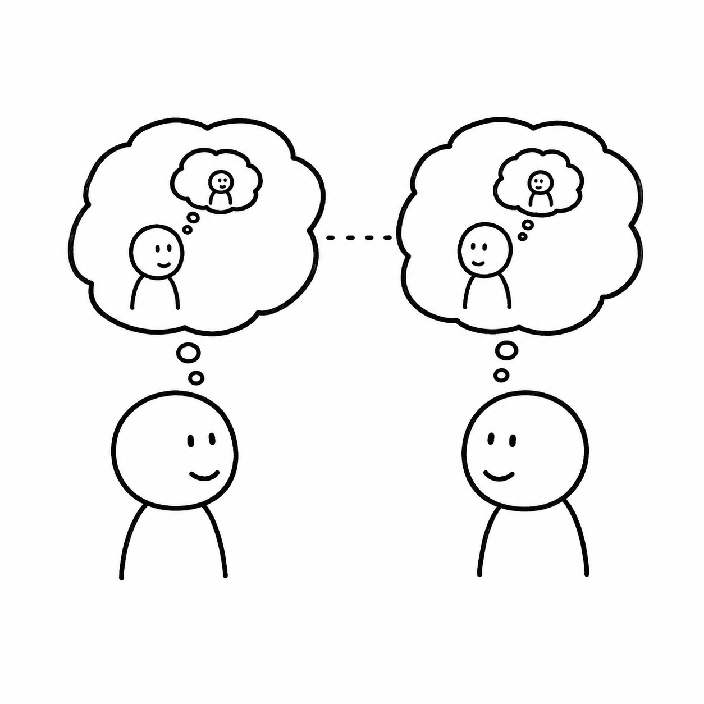

A Play

(The institute's lecture room with the window to the lake. The Swedish Professor is in the middle of his lecture next to a whiteboard. All others sit.)
The point is, when it comes to trust, it is simply not sufficient to think about whether the trustor, the person — the player, who has to decide about whether or not to trust another, believes that the trustee will reward the trust — that the other will return the favour. That is trivial and any model that stops at this stage misses the social mechanics of trust.
Can you explain this again — like for an eight-year-old?
Ok, let me address your inner child.
(A beat.)
Imagine I lend you my toy and I think you will give it back. That sounds like trust, doesn't it. But it's only half of it. The other half is that you know that I trust you. And once you know that you may feel ashamed keeping the toy. You want to live up to my trust — to my lending you the toy.
A toy example.
A toy.
Yes, a toy example with a toy.
Why don't you explain to them how this relates to our core curriculum.
For a good dictator it does not merely matter whether a specific individual believes in his goodness and will comply. It matters to him whether he believes that another believes that someone will comply.
You are now invoking a three-person game. Maybe you should have given us a different, um, toy example.
I would have moved on to one. But you do get the idea?
I believe that he believes…
Exactly.
But isn't it even more important for us whether someone believes that other others believe that everyone believes that —
Yes. Yes. You are running ahead of me. And you are right. The third order is more important than the second. And the fourth more important than the third. And so on.
(A beat.)
And when you go all the way — when you go to infinity — you arrive at something we call common knowledge. Everyone knows. Everyone knows that everyone knows. Everyone knows that everyone knows that everyone knows. Without end.
(A beat.)
And I take it that is when a dictator is truly in command? Not when they believe. Not when they believe others believe. But when it is — how do you call it again?
Common knowledge.
When it is common knowledge that everybody will comply. No more enforcement necessary. The system runs on itself.
Well put, young man.
Beautiful phrase by the way. I will remember it.
(The New Student looks at the First Student.)
(The First Student looks at the Young Student.)